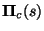

|
You are here : Control
System Design - Index | Book Contents | Appendix
B | Section B.3
B. Smith-McMillan Forms
B.3 Smith form for polynomial matrices
Using the above notation, we can manipulate polynomial matrices in
ways which mirror the ways we manipulate matrices of reals. For example,
the following result describes a diagonal form for polynomial matrices.
Theorem 1.1 (Smith
form). Let
be a
polynomial matrix of rank r, then
is equivalent to either a matrix
(for m1 < m2) or to a matrix
 (for m2 < m1), with

where
and
are matrices with all their elements equal to zero. Furthermore
are monic polynomials for
,
such that
is a factor in
,
i.e.
divides
.
If m1 = m2, then
is equivalent to the square matrix
E(s).
Proof (by construction)
| (i) |
|
By performing row and column interchange
operations on
,
bring to position (1,1) the least degree polynomial entry in
.
Say this minimum degree is |
| (ii) |
|
Using elementary operation (e03) (see definition
B.3), reduce the term in the position (2,1) to degree
.
If the term in position (2,1) becomes zero, then go to the next
step, otherwise, interchange rows 1 and 2 and repeat the procedure
until the term in position (2,1) becomes zero. |
| (iii) |
|
Repeat step (ii) with the other elements in the
first column. |
| (iv) |
|
Apply the same procedure to all the elements but
the first one in the first row. |
| (v) |
|
Go back to step (ii) if non zero entries appear,
due to step (iv), in the first column. Notice that the degree of
the entry (1,1) will fall in each cycle, until we finally end up
with a matrix which can be partitioned as
where
is a monic polynomial. |
| (vi) |
|
If there is an element of
which is of less degree than
,
then add the column where this element is, to the first column,
and repeat steps (ii) to (v). Do this until the form (1.6)
is achieved with
of less or, at most, equal degree to that of every element in
.
This will yield further reduction in the degree of the entry in
position (1,1). |
| (vii) |
|
Make
. |
| (viii) |
|
Repeat the procedure from steps (i) through (viii)
to matrix
. |
Actually the polynomials
in the above result can be obtained in a direct fashion as follows:
| (i) |
|
Compute all minor determinants of
|
| (ii) |
|
Define
as the (monic) greatest common divisor (g.c.d.) of all
minor determinants of
.
Make
|
| (iii) |
|
Compute the polynomials
as
|
|